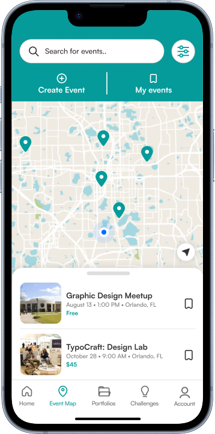
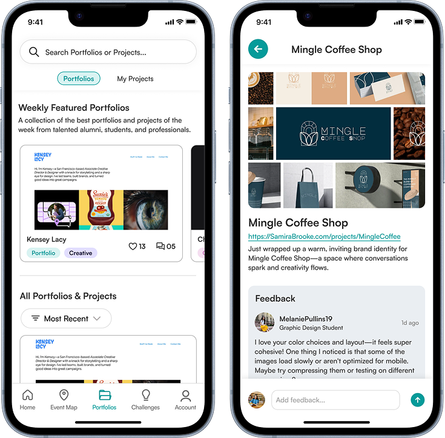
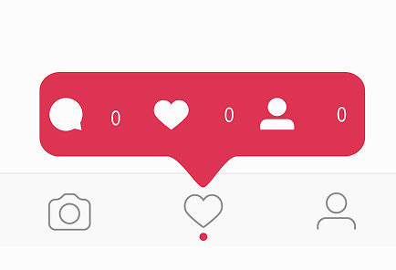
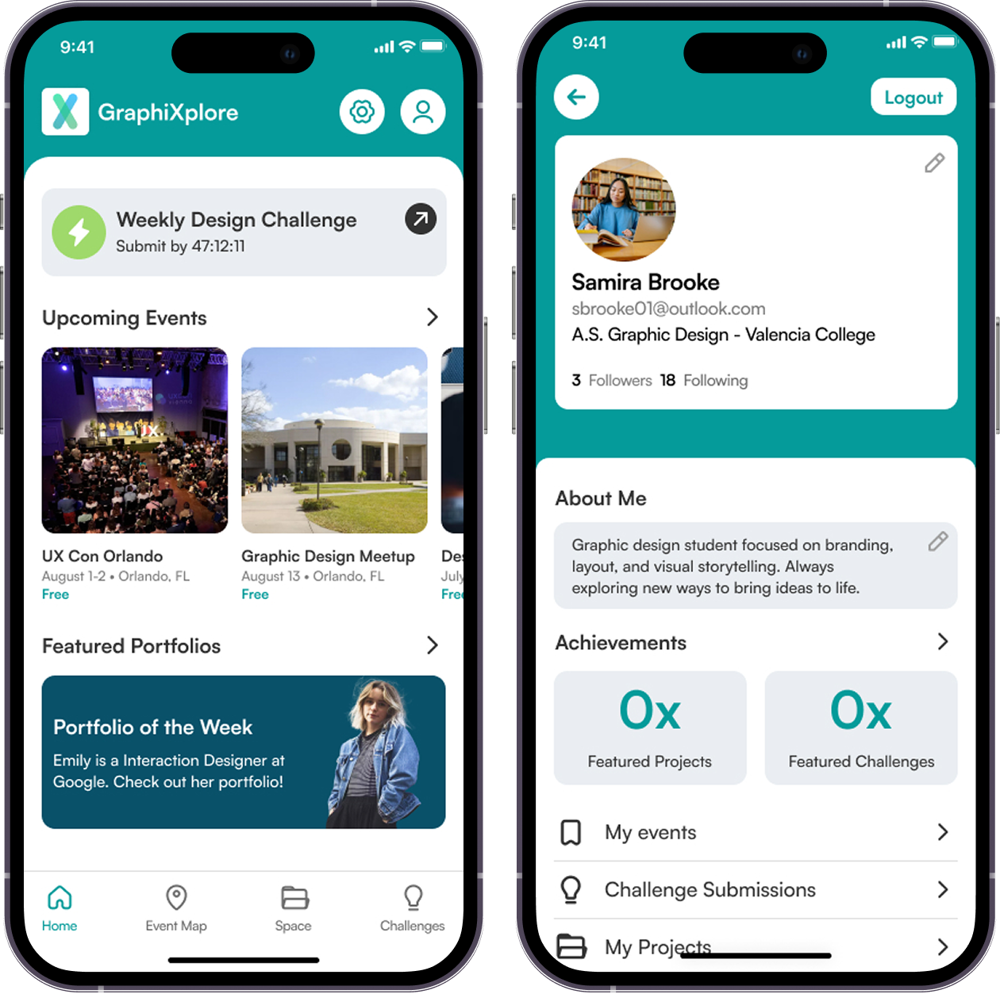
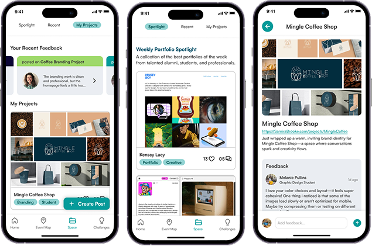
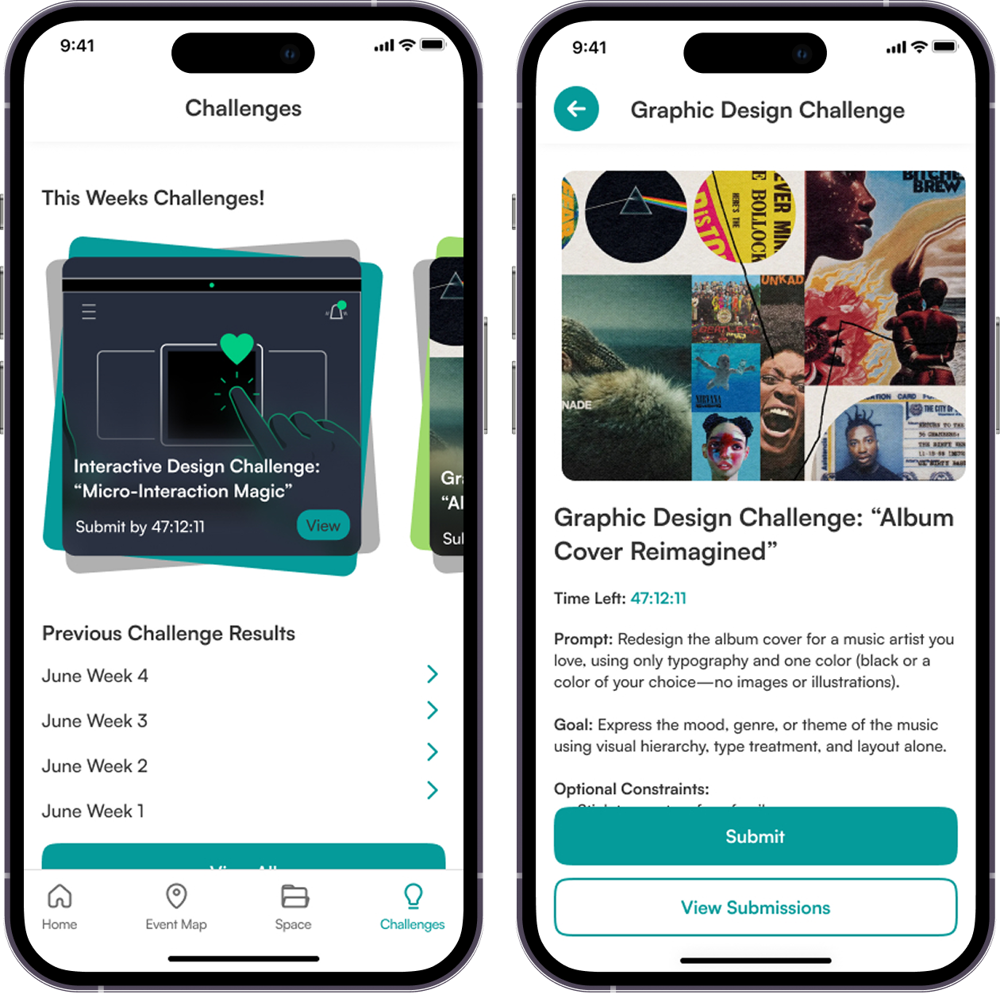

GraphiXplore App: Empowering design students to be more involved with the local design community
OVERVIEW
What is GraphiXplore?
GraphiXplore is a mobile app crafted to help graphic/interactive design students stay engaged and inspired beyond the classroom. Built as a fully functional prototype, this solo UI/UX project showcases my full design process from concept to high-fidelity interface, created in Figma during the Summer 2025 semester.
ROLE
UI/UX Designer
TIMEFRAME
2 Months (Summer 2025)
TYPE
Academic Project
MY EXPECTED IMPACT
+35%
Increase in student participation in design events
+50%
More peer connections between students and designers with shared interests
+30%
More industry connections between students and professionals
(Projected impact based on the proposed GraphiXplore experience)
THE PROBLEM
💡
How can we engage Graphic/Interactive design students beyond the classroom and into the real world?
Design instructors at Valencia College noticed that design students struggled to engage with the local design community, find professional opportunities, and receive meaningful feedback beyond the classroom.
SOLUTION
Creating a centralized hub for design students
GraphiXplore acts as a centralized hub for Graphic and Interactive design students, featuring 3 core interactive features that help them connect with and stay active in their local design community.

Use the Event Map to discover locla design opportunities, including portfolio reviews, workshops, and critique sessions
Design Challenges for designers to participate in. Submit your work and get judged by professionals in the industry.

The portfolio space is a dynamic place for sharing portfolios, receiving meaningful critique, and dsicovering weekly standout talent
RESEARCH & PROCESS
Synthesizing Survey Data & Research
I synthesized the survey findings, user research, and inspiration gathered during the discovery phase to identify common needs and pain points among design students. Insights learned helped guide the development of wireframes, user flows, and personas.
Key Insights from Survey Data and Research →
Scattered not centralized
Most users point to unclear event outreach and no central internship listings as major frusturation

People want to be seen
Project showcase and peer feedback are the top motivators. Willingness to share work is low.
Gamification helps
Gamification elements score moderately high in perceived value.
FINAL DESIGN
Using key insights to create the 3 core features
The final design transforms earlier concepts into a high-fidelity experience. View an in depth overview of the main app features below:
HOME & ACCOUNT SCREEN
Central Hub for Navigation and Discovery
The home screen acts as a portal for students to dive into the design community and explore all features of the app. The design of the user account screen is made for students to customize their profile and view their achievements.

INTERACTIVE DESIGN MAP
Discover local design events
The interactive events section gives students easy access to all relevant local design opportunities, including portfolio reviews, workshops, and critique sessions. Users can RSVP directly within the platform and receive automated reminders to ensure they stay engaged and prepared.
PORTFOLIO SPACE
Built for Creative Growth
A space where students, alumni, and professionals can share their portfolios and get feedback from each other. The portfolio space is a dynamic place for sharing portfolios, receiving meaningful critique, and discovering weekly standout talent.

DESIGN CHALLENGES
Central Hubs for Navigation, Discovery, and User Identity
Weekly challenges for designers to participate in. At the end of the week, users submit their work and get judged by professionals in the industry.

FINAL PROTOTYPE
View the experience in full
KEY TAKEAWAYS
What I learned while working on GraphiXplore
Working on this project, I learned the importance of designing flows that feel intuitive to users and the importance of designing a product that is enjoyable for your target audience to use. Professor feedback suggested that some sections of the app should be made clear what their function is. With more time, I would definitely add more necessary details to flows and create more clarity in certain sections of the app.